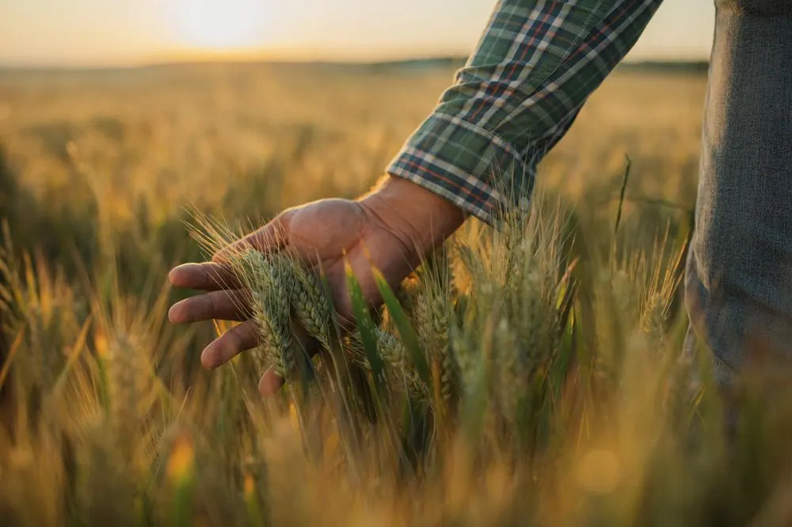
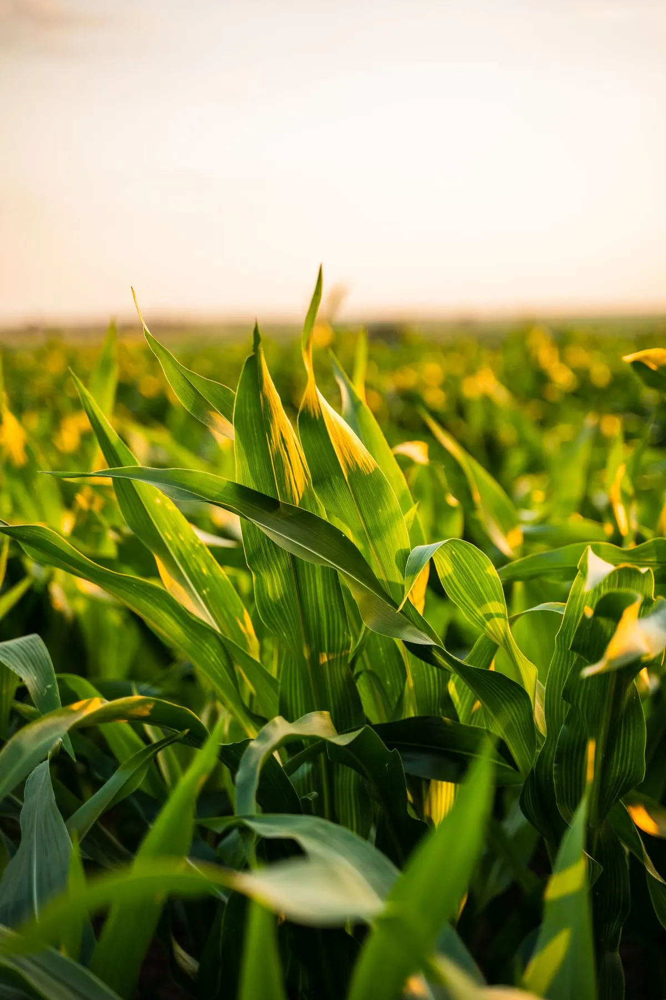
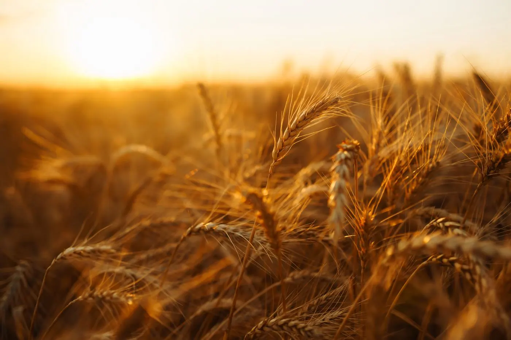
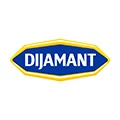
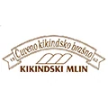
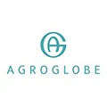
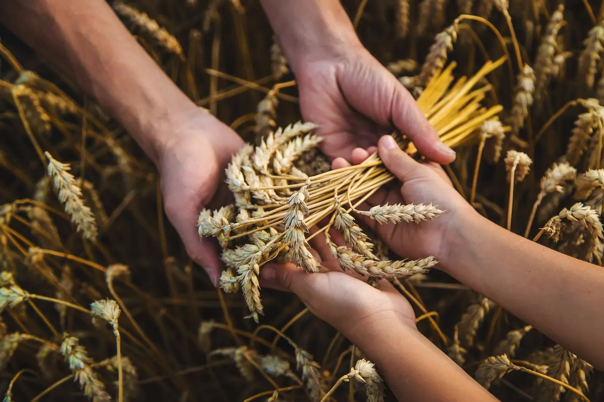

Zemljoradnička zadruga
Žitopromet
Otkup i prodaja žitarica, repromaterijal i stručna podrška za poljoprivrednike Vojvodine — od setve do prodaje.
Žitopromet u brojkama
0godina tradicije
Iskustvo koje se prenosi kroz tri generacije.
0ha obradivog zemljišta
Površine koje obrađujemo svake godine.
0tona žetve godišnje
Stabilan prinos i kontrolisan kvalitet.
0kultura u proizvodnji
Žitarice, uljarice i šećerna repa.

Šta radimo
Proizvodnja i promet poljoprivrednih proizvoda
Uz proizvodnju i promet, naš agronomski tim vam je uvek na raspolaganju: od projektovanja zasada, preko izvođenja projekta, do nadzora radova.
Zakažite konsultacijeSaradnja
Ugovaranje proizvodnje
Uslovi saradnje sa zadrugarima i kooperantima pre početka sezone.
Repromaterijal
Sve za setvu
Seme, đubrivo i zaštitna sredstva na jednom mestu.
Obrada zemljišta
Uslužna mehanizacija
Više od deset mašina za setvu, đubrenje i obradu zemljišta.
O nama
Žitopromet Kikinda

Tri decenije poverenja
Tradicija
Od 1993. godine sarađujemo sa poljoprivrednicima, zadrugarima i kooperantima Kikinde i okoline, sezonu za sezonom.
Promenljivo tržište
Izazov
Vremenske nepogode, promenljivi uslovi na tržištu i nepredvidiv prinos: sa tim se poljoprivrednici suočavaju svake sezone.
Šta nudimo
Rešenje
Obezbeđujemo repromaterijal, stručnu pomoć i plasman proizvoda, uz jasne uslove saradnje dogovorene pre sezone.

Partnerstvo i podrška
Kako radimo
Sa zadrugarima radimo u tri koraka:
- Analiziramo potrebe proizvođača
- Povezujemo ih sa semenom, đubrivom i mehanizacijom
- Pružamo podršku tokom cele sezone
Od semena do otkupa
Zemljoradnička zadruga Žitopromet
Poljoprivredne kulture
Naše kulture
Pšenica
01Većina pšenice završi u mlinu, a od brašna nastaje hleb. Zrno je pretežno skrob, uz desetak odsto proteina, pa ga koristi i prehrambena industrija, dok slabiji rod ide u ishranu stoke.
Kukuruz
02Kukuruz se kod nas seje u proleće, a koristi se gotovo cela biljka. Od zrna se dobijaju brašno, skrob, ulje i etanol, a cela biljka može da se sili i da završi u ishrani stoke.
Ječam
03Ječam je pre svega stočna hrana, na to odlazi oko sedam desetina svetskog roda. Ostatak ide najviše u slad, od kog se prave pivo i žestoka pića, a mali deo ide u ljudsku ishranu.
Šećerna repa
04Šećerna repa se gaji zbog korena, u kom je između 16 i 18% šećera. Ono što ostane posle prerade ne propada: melasa ide u stočnu hranu, kvasac i alkohol, a repin rezanac u ishranu stoke.
Suncokret
05Suncokret potiče iz Severne Amerike i tamo se gaji hiljadama godina. U semenu je od 40 do 50% ulja, a ono što ostane posle ceđenja ide u stočnu hranu kao sačma bogata proteinima.
Soja
06Soja potiče iz istočne Azije i danas je jedna od najvažnijih uljarica. U zrnu je oko petina ulja i preko trećine proteina, pa se prerađuje u ulje i sačmu za stoku, a i u tofu i sojino mleko.
Utisak
Sa Žitoprometom sarađujem već dugi niz godina i uslugom sam prezadovoljan. Preporučio bih ih svakome ko se bavi poljoprivredom.
Poljoprivredni članci
Iz naše čitaonice
Članci koje smo izdvojili za vas.

Saradnja
Naši saradnici




Kontaktirajte nas
Za pitanja i savete slobodno nas pozovite ili napišite, radnim danima od 09:00 do 16:00.